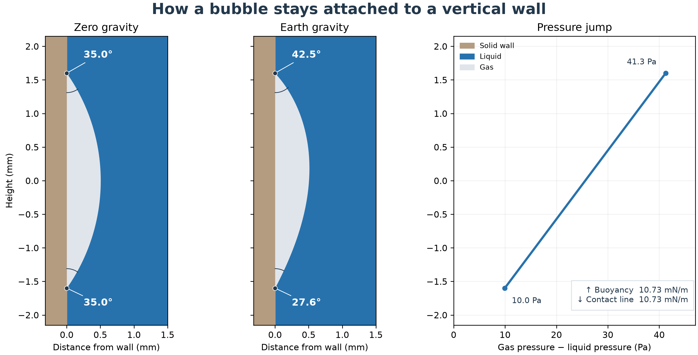
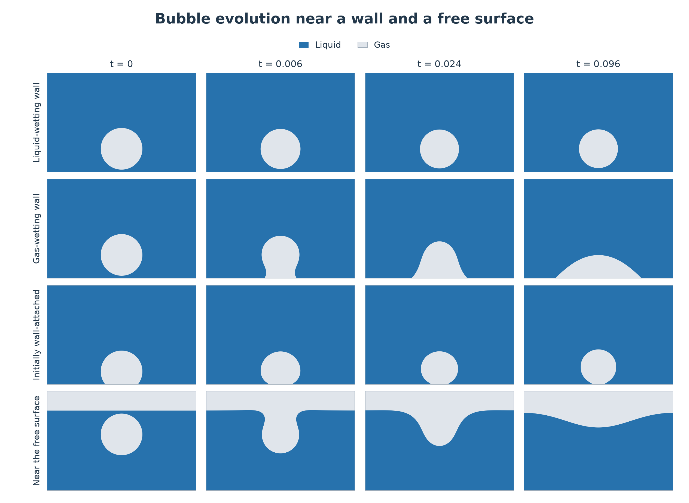

本页把竖直杯壁上的三相接触、杯底液隙、气泡浮升和顶部泡帽连通放在同一组物理方程里。水和气体是两种流体，杯壁是固体。泡沫的状态由气域连通性、液膜和界面材料描述。液相体积分数、分散泡气量和泡数只能记录库存，界面形状、膜厚和接触线必须由界面解或额外状态提供。
1. 从自由能得到体方程和界面力
记 为两相区域， 为气液界面， 为气、液各自覆盖的固面， 为三相接触线。 向上，， 从气指向液，。洁净、等温、相间无质量传递时，能量为
洁净界面取 。若有表面活性剂，对材料面元保持 不变作变分，得到 。表面能对位移 的内点梯度为 。因此体方程、运动学条件与应力跳跃为
这里的 是单位面积能量梯度。静止洁净球泡、无近程作用时有 。不可溶表面剂可用守恒输运 ，取 和边界无通量。可溶时加体相化学自由能及配对吸附通量。
在封闭固定容器、光滑界面和无外功的条件下，设 是壁面滑移阻力， 是沿固面、垂直接触线的推进速度。对动量方程乘速度并积分，再加上界面和壁面自由能的变化，得到
这里固壁不渗透，壁面切向牵引平衡含滑移摩擦和接触线能量变分。拓扑事件应由能处理开孔的细尺度解推进，并审计跨事件能量和通量。开口整杯另计边界通量与外功。接触线变分 · 界面材料与接触线耗散
2. 三相接触线、竖壁和底壁
统一使用从气体内部测量的接触角 。接触线向气体覆盖区外推进时，每单位新覆盖面积的能量一阶变化为 。由此得到 Young 角和沿壁驱动力
光滑均匀壁在自由静止时满足 。经过粗粒化的粗糙或化学不均匀壁，可用前进和后退阻力保留钉扎。令 ，定义
在 时 。 由壁面测量或独立微观试验给定。该条件保证 ，适用于壁面的任意朝向。壁反力沿局部法向。竖直壁的法向压力没有竖直分量，水平杯底的法向反力有竖直分量。
竖壁附着的二维精确静力方程
对两接触点已钉扎的竖墙，气泡截面 ，，固定截面积 。把等温能量约化到单位出平面长度，减去常数壁面能，得到
用乘子 固定面积。令 ，变分与两相静水关系给出
平衡时 。 和 是同一个力的两种算法。固定端点和面积时，能量对斜率严格凸，所以所得图形解在该函数类中是唯一极小值。三维的表面张力合力要沿整条接触线积分，形式为 ，其中 是气液界面沿接触线的外向共法向。三维接触线静力恒等式

底壁液隙、接触与脱离
气泡与底壁之间仍有液隙时， 没有新增覆盖面积。体方程推进液隙排液，近程相互作用由气–液–固材料组合的界面自由能进入，见下一节。接触后，固面覆盖的变化改由同一个 与滞后条件推进。对于给定气泡，气域 的物质控制体动量账可写成
为气体控制体外法向。把界面气侧牵引用应力跳跃改写成液侧牵引和界面力时，接触线贡献随界面共同进入。接触边界开始退缩时更新覆盖区，最后的接触线消失后壁面牵引项消失。底壁附着能否维持取决于实测壁面和气泡形态，二维竖壁的余弦差公式不能直接套用到底壁。玻璃与气泡之间液膜的干涉测量和数值对照
3. 液膜、浮升与顶部泡帽
两类薄膜来自同一能量变分
近接面局部几何可用壁膜厚度 或自由液膜厚度 表示。对选定的近接区域和参考面积，用材料相互作用势写成
每对近接面只计一次。自由液膜仍有两张气液面，两张面的表面能分别计入。 和 由各自材料给定，长程极限取零。若引入前驱膜，能量端点须和壁能及 Young 角对应。平行面的局部势是材料闭合，弯曲或近孔口区域可直接在两相域内求解并对完整相互作用能作变分。
沿固定壁的局部平面液膜，深度积分质量守恒为 。只有在薄膜、低惯性、固壁无滑移且另一面切向无应力的极限，才可进一步消去速度，得到
这里 为静态膜能。排液通量使用的系数是上述边界条件下的润滑近似。顶部双自由面的泡帽一般有移动界面、表面切向应力和曲率，需从两相解获得膜内通量。具有移动边界的膜体 服从精确积分账 ， 为边界速度。液膜排出的液体进入周围液体库存。壁面势与接触角 · 自由液面附近泡间液膜
浮升、开孔与实际释气
气泡离开固面后，仍用第 1 节的两相方程。静水压力部分给出 的净向上驱动，动态压力和黏性应力由周围流动解给出。球形低惯性等额外条件只在做简化基准时引入。气泡浮升到自由液面下方，两个气区之间的液膜仍属于液相。开孔判据要来自包含相互作用、界面材料与拓扑变化能力的微观解，泡域连通性由开孔后的几何判断。
要计算旧泡气体实际过孔的质量，令 是气相中来自原泡的质量示踪分数，初始泡内为 1，外部气体为 0。在气区内求解其守恒输运。对运动的孔截面 ，法向 指向外部，截面速度为 。记 为扩散质量通量，有
该式给的是净过孔释气。只积正通量可另算累计外流，并单列回流。连通标签改变的瞬间可以交换粗网格表示，物理上穿孔的旧泡气量要由上式测出。气相压力变化明显时以质量记账，并用气体状态方程恢复体积。实际啤酒的溶解 CO₂ 另需液内输运、相间溶解平衡和成核机制，液侧损失与气侧增加使用同一质量通量。
4. 弥散界面原型与 Cirrus–VOF 接口
二维原型的可计算方程
相场 表示气体， 表示液体。洁净弥散模型的能量、化学势、归一化张力和所用三次壁势为
取 ，用体积速度 和质量扩散通量 。能量一致的变密度方程为
令壁外法向为 ，。壁上设不渗透、无化学势通量，并可取
相场平流与毛细力做功相消，壁相场输运与滑移牵引做功相消。余下耗散为体内 ，壁面 。二维动态图采用无惯性、无重力、常黏度、自由滑移的 Stokes 支路，并取天然润湿边界。面上的毛细力与相场通量使用同一个面相场值，使二者的离散做功相消。气域连通由相场阈值检查，弥散界面重叠所致连通的时间受 和迁移率影响。变密度 NS–CH 与能量律

VOF 气体表示与守恒交换
锐界面气相指示函数在无相间传质时满足 。VOF 由面体积通量运输它的单元平均。记单元内纯液体、分散泡气体和 VOF 解析气体的体积分数为 ，则
是同一步内按几何连通和表示尺度换账的气体体积，适用于两库采用同一恒定气体密度的情况。泡数变化取事件前后独立气域数的差，气体通量取相应事件连接的库存与输运，二者由同一事件几何提供。细尺度状态至少保存气液几何、气域连通标签、覆盖区及接触线、必要的液膜与界面材料。跨单元必须用成对通量，气体动量与质量使用一致的配送。完整滤波推导、受控开孔验收和粗变量无法自治闭合的证明见守恒转换方程及受控开孔。
5. 计算与验证范围
竖壁结果是从自由能得到的锐界面静力平衡及独立力账。底壁接触和顶部连通已有二维弥散界面对照。已有 VOF 受控开孔验收用于核对守恒换账，整杯 0–5.01 秒结果仍是关闭旧泡沫模型的纯 VOF 基线。真实底壁附着与脱离、无人工开孔的顶部排液与破膜、净过孔释气量以及新模型接入整杯的验证仍待完成。